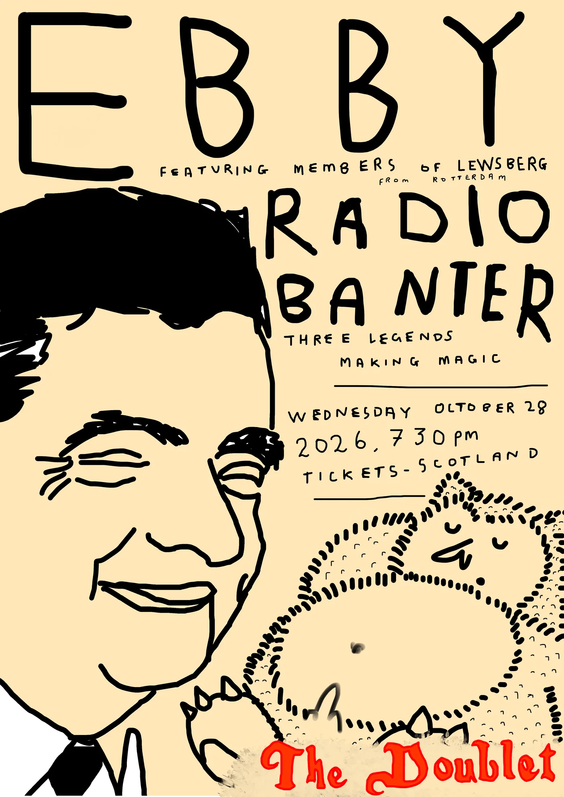
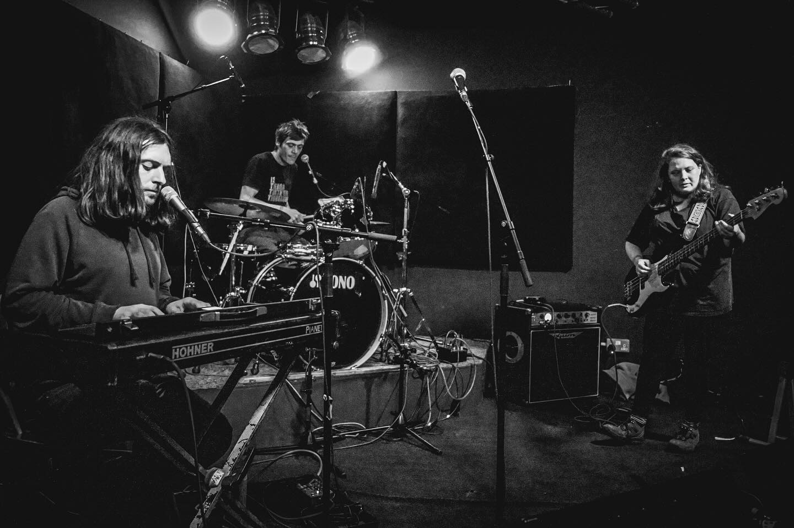

Radio Banter

Radio Banter are supporting Ebby from Rotterdam on Wednesday 28th October 2026 at The Doublet, Glasgow.
https://tickets-scotland.com/whats-on/ebby-from-rotterdam

Our CD album 'Radio Banter' is available from Some Great Reward, Glasgow; Monorail, Glasgow; Europa Music, Stirling; and Good Vibes, Edinburgh!
10-track CD album produced by Chris White and hand made in Glasgow (by Spicey); eco cardboard case with laminate front/back/spine covers & disc holder; signed by the band and artwork artist Lily Paine; unique hand labelled slow-burned discs; 20-page illustrated lyric booklet; plus 2 shiny stickers!
Radio Banter are
Chris Wallace Drums & Vocals
Sephi Lock Bass guitar
Rob Alexander Vocals & Electric piano
